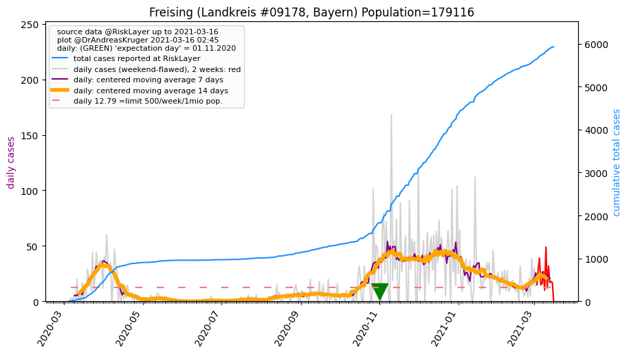
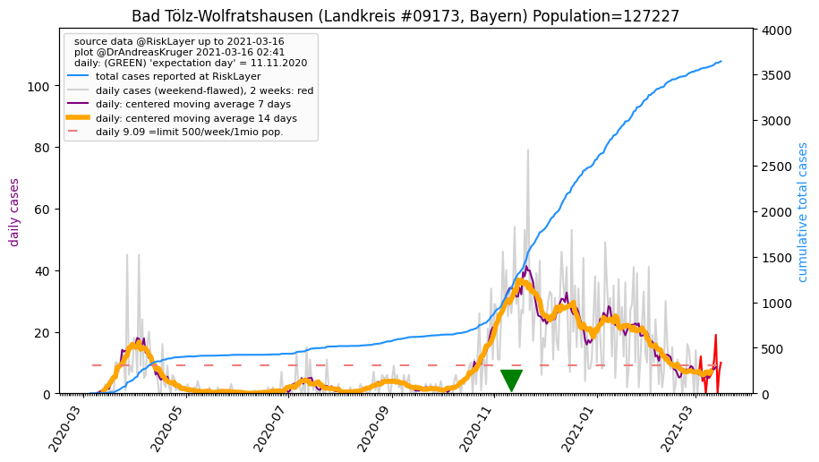
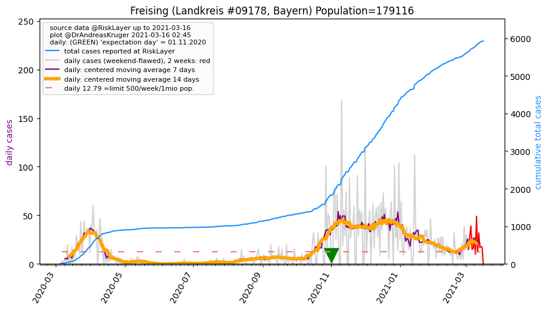
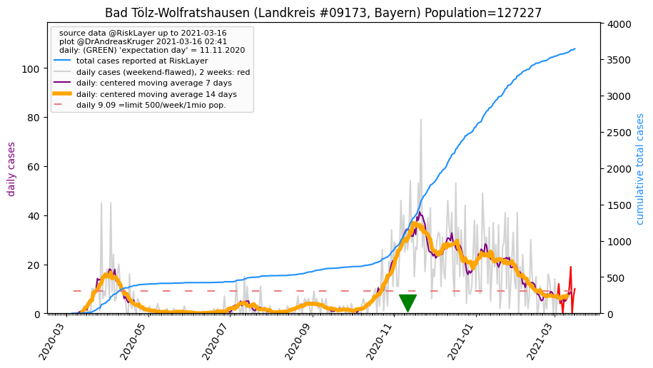

")
")
")
")
")
")

")
")

")
")
")
| München_KS (0.0 km) |
München_LK (10.8 km) |
Dachau_LK (24.6 km) |
Starnberg_LK (25.7 km) |
| Fürstenfeldbruck_LK (26.0 km) |
Ebersberg_LK (28.6 km) |
Freising_LK (35.7 km)  |
Erding_LK (37.5 km) |
| Landsberg am Lech_LK (46.8 km) |
Bad Tölz-Wolfratshausen_LK (47.6 km)  |
Aichach-Friedberg_LK (47.7 km) |
Pfaffenhofen a.d. Ilm_LK (49.3 km) |
| Miesbach_LK (49.8 km) |
All plots are regenerated with new data every night. Beware this temporary hotspot is an experimental page - it might get removed, so please do not link to it. Instead link to project http://tiny.cc/cov19de.